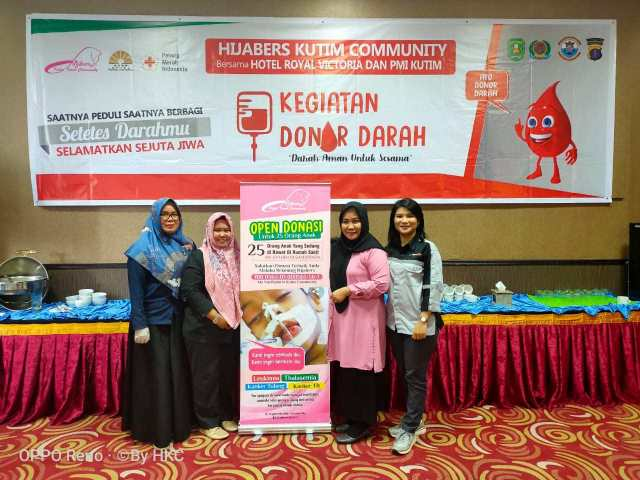

Peduli Kemanusiaan, Hijaber Kutim Community Gelar Donor Darah Bersama HRV dan PMI
Hijabers Kutim Community turut menyelenggarakan kegiatan donor darah sebagai bentuk kepedulian terhadap sesama. Bersama Hotel Royal Victoria (HRV) dan Palang Merah Indonesia (PMI) Kutim, aksi sosial ini, digelar di Hotel Royal Victoria Sangatta, Selasa (10/12/2019). Dari 86 undangan yang mendaftar sebagai calon pendonor, hanya 40 orang yang memenuhi syarat untuk mendonorkan darah. Adpun hasil donor, diantaranya darah AB sebanyak 2 orang, darah A 12 orang, darah B 13 orang, dan darah O 13 orang.